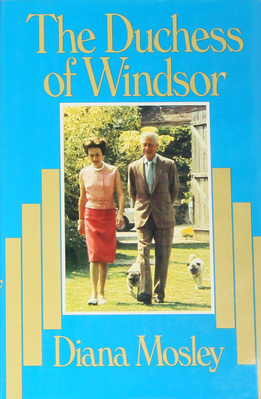

Books
The Pursuit of Laughter
2008

A Life of Contrasts
1977

The Duchess of Windsor: A Personal Memoir
1980
A collection of Diana Mosley's published works, including her books, articles, and essays.
2008
1977

1980